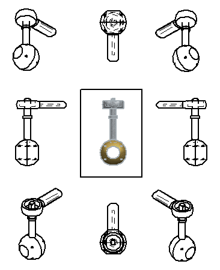
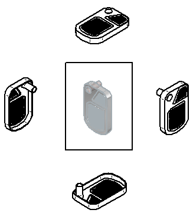

Create a principal view
You can fold additional views from a source view that you select.
-
Choose Home tab→Drawing views group→Principal View .
-
Select a drawing view as the source view.
-
Do one of the following to fold the view:
-
To create an orthographic view, click to the right, left, top, or bottom of the selected view. This folds the selected view 90 degrees about the closest view edge.
-
To create a pictorial view relative to the orientation of the selected view, click diagonally to the top-right, top-left, bottom-right, or bottom-left of the selected view.
-
-
Continue placing views, or right-click to end the command.
If the source view is an orthographic view such as the front view shown below, then you can fold additional views from it to create the following eight view orientations.

-
You can derive a principal view from a pictorial view. In this case, you can fold views in four directions:

-
Section views, auxiliary views, and detail views are not valid input for this command.
-
The Dynamic display option on the Drawing View Wizard tab (Solid Edge Options dialog box) controls whether the drawing view is displayed using VHL preview mode while you fold the views. You can set this option by model type and size. For more information, see Specifying a preview type for drawing views.